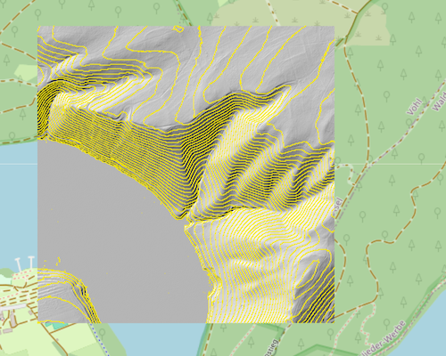

Schummerung
Eine Schummerungskarte ist ein leistungsstarkes Werkzeug zur intuitiven Visualisierung des Geländereliefs. Durch die Simulation von Licht und Schatten erzeugt sie einen plastischen, dreidimensionalen Eindruck der Landschaft, der für vielfältige Zwecke genutzt wird. Zu den wichtigsten Anwendungsbereichen gehören:
- Kartographie und visuelle Kommunikation: Dient als ansprechende Basiskarte, um thematischen Informationen (z.B. Geologie, Vegetation) einen räumlichen Kontext zu verleihen und Karten für ein breites Publikum verständlicher zu machen.
- Archäologie und Denkmalpflege: Macht sehr subtile Bodenstrukturen wie alte Wälle, Gräben, Hügelgräber oder landwirtschaftliche Terrassen sichtbar, die im Gelände oder auf Luftbildern kaum zu erkennen sind.
- Geowissenschaften: Unterstützt Geologen und Geomorphologen bei der Identifizierung und Analyse von Landschaftsformen wie Verwerfungen, Moränen, Dünenfeldern oder Flussterrassen.
- Raumplanung und Analyse: Bietet eine schnelle und intuitive Übersicht über die Topographie für die vorläufige Standortanalyse, die Landschaftsplanung und die Umweltverträglichkeitsprüfung.
- Sicherheits- und Rettungsdienste: Wird zur Geländebeurteilung, für die Einsatzplanung und zur Analyse von Sichtverbindungen und potenziellen Gefahrenzonen im Katastrophenschutz und bei militärischen Operationen genutzt.
- Bildung und Lehre: Eignet sich hervorragend zur Vermittlung eines grundlegenden Verständnisses von topographischen Formen und landschaftsprägenden Prozessen in Schulen und Universitäten.
Allgemein
Die Schummerung ist eine zentrale Technik in der Kartographie und Geovisualisierung, um die Geländetopographie anschaulich darzustellen. Sie erzeugt einen räumlichen Eindruck von Höhenunterschieden, indem sie Licht- und Schatteneffekte simuliert, so als würde das Gelände von einer imaginären Lichtquelle beleuchtet. Dies hilft, die Formen des Geländes wie Hügel, Täler, Bergrücken, Kuppen und Senken leichter zu erkennen und zu verstehen.
Ähnlich wie bei Höhenlinien, die absolute Höhen durch Linien gleicher Höhe verbinden, visualisiert die Schummerung das relative Relief und die Neigung des Geländes. Sie ist eine qualitative Methode, die keine exakten Höhenwerte liefert, aber ein intuitives Bild der Landoberfläche vermittelt.

Schummerung für eine Datenkachel am Edersee (Hessen).
Wesentliche Aspekte und Vorteile der Schummerung sind:
- Verbessertes Geländeverständnis: Durch die Simulation von Licht und Schatten werden dreidimensionale Formen auf einer zweidimensionalen Karte sichtbar gemacht, was das Verständnis der Topographie erheblich erleichtert.
- Hervorhebung von Strukturen: Die Schummerung kann selbst subtile Geländemerkmale hervorheben, die in anderen Darstellungen möglicherweise nicht so deutlich erkennbar sind.
- Grundlage für Karten: Oft wird die Schummerung als Hintergrundebene in thematischen Karten verwendet, um den räumlichen Kontext für andere dargestellte Informationen zu bieten.
- Ergänzung zu anderen Methoden: In Kombination mit anderen Visualisierungen wie Höhenlinien oder Farbhöhenschichten bietet die Schummerung einen umfassenderen und anschaulicheren Eindruck des Geländes. Höhenlinien liefern die quantitativen Höheninformationen, während die Schummerung das visuelle Relief hinzufügt.
Erscheinungsbild
Die wichtigsten Parameter, die das Erscheinungsbild der Schummerung steuern, sind:
- Azimut der Lichtquelle: Dieser Parameter gibt die horizontale Richtung an, aus der das Licht kommt, gemessen in Grad im Uhrzeigersinn von Norden (0°). 0° bedeutet Licht aus dem Norden, 90° aus Osten, 180° aus Süden und 270° aus Westen. Der Standardwert ist oft 315°, da eine Beleuchtung aus Nordwesten für das menschliche Auge am natürlichsten und anschaulichsten wirkt und das Relief am besten hervorgehoben wird. Eine Beleuchtung aus Nordwesten (315°) beleuchtet Nordwesthänge hell und lässt Südwesthänge im Schatten liegen, was ein plastisches Bild erzeugt.
- Höhe der Lichtquelle: Dieser Parameter bestimmt den vertikalen Winkel der Lichtquelle über dem Horizont, gemessen in Grad (0° ist Horizont, 90° ist senkrecht von oben). Eine niedrigere Höhe (z. B. 0°) erzeugt längere Schatten und betont subtilere Geländefunktionen, kann aber auch zu starken Schattenwürfen führen. Eine höhere Höhe (z. B. 90°) beleuchtet das Gelände gleichmäßiger, wodurch weniger ausgeprägte Schatten entstehen. Ein üblicher Standardwert ist 45°.
- Vertikale Überhöhung: Mit diesem Faktor wird die Höhe des Geländes vor der Berechnung der Schummerung multipliziert. Ein Wert größer als 1 überhöht das Relief künstlich und lässt auch in flacheren Gebieten stärkere Schatten entstehen, was die Sichtbarkeit des Geländes verbessern kann. Ein Wert von 1 bedeutet keine Überhöhung.
- Algorithmus (Horn | ZevenbergenThorne): Wählt den Algorithmus zur Berechnung der Steigung und Ausrichtung, die für die Schummerung verwendet werden. Horns Algorithmus wird oft für raueres Gelände empfohlen, während ZevenbergenThorne für glattere Landschaften besser geeignet sein kann.
-
Schummerungsvarianten:
- regular: Klassisch, basierend auf einer einzigen Lichtquelle, gut für schnelle Übersicht.
- multidirectional: Verbessert die Detailerkennung durch mehrere Lichtquellen (225°, 270°, 315°, 360°), ideal für detaillierte Reliefkarten. Hinweis: Der Wert für den Azimut der Lichtquelle wird ignoriert.
- combined: Fokus auf Kombination von Neigung und Beleuchtung, kann spezifische visuelle Effekte hervorheben.
- igor: Erzeugt eine weichere, subtilere Schummerung, die sich gut als Hintergrund für weitere Kartenebenen eignet. Hinweis: Der Wert für die Höhe der Lichtquelle wird ignoriert.
Eingabe: Aus den Koordinaten eines Referenzpunkts wird die Kachel (1x1 km) abgeleitet, für die die Schummerung erstellt wird. Mögliche Eingabeformate:
- Lon/Lat-Koordinaten (WGS84, EPSG:4326)
- UTM-Koordinaten (EPSG:25832 / EPSG:25833)
Ausgabe: Abhängig vom Eingabeformat werden unterschiedliche Ausgabeformate erzeugt:
- PNG in der Projektion EPSG:3857 (Webmercator) mit expliziter Georeferenzierung durch Lon/Lat-Koordinaten (WGS84, EPSG:4326)
- GeoTIFF in der Projektion der DGM1-Ausgangsdaten (EPSG:25832 / EPSG:25833) mit impliziter Georeferenzierung in den Metadaten
Nutzung im Nahbereich
Die Nutzung der Schummerung auf dieser Webseite ist in erster Linie für den Nahbereich gedacht. Es lässt sich die Schummerung für jeweils eine Kachel von 1x1 km abrufen. Durch das Wiederholen des Vorgangs kann die Schummerung für einen lokalen Bereich angezeigt werden.
Kombination von Höhenschichtlinien und Schummerung
Schummerung + Höhenschichtlinien für eine Datenkachel am Edersee (Hessen).
Die Stärke der kombinierten Darstellung liegt in der Verbindung der jeweiligen Vorteile beider Methoden:
- Verbessertes räumliches Verständnis: Höhenlinien allein vermitteln oft kein unmittelbares räumliches Gefühl für das Gelände. Die Schummerung fügt die notwendige visuelle Plastizität hinzu und ermöglicht eine intuitive Erfassung von Geländeformen wie Hügeln, Tälern und Senken.
- Erhöhte Lesbarkeit und Interpretation: In Bereichen mit geringen Höhenunterschieden oder sehr dicht liegenden Höhenlinien kann die Übersichtlichkeit leiden. Die Schummerung hilft, auch subtile Reliefdetails hervorzuheben und die Lesbarkeit der Karte insgesamt zu verbessern.
- Quantitative und qualitative Information: Die Kombination liefert sowohl exakte Höhenwerte (durch Höhenlinien) als auch einen anschaulichen qualitativen Eindruck der Geländeform (durch Schummerung). Dies ermöglicht eine umfassendere Analyse und Interpretation des Geländes.
- Ansprechende Kartengestaltung: Die Integration von Schummerung macht Karten visuell attraktiver und intuitiver nutzbar. Sie trägt dazu bei, dass die Aussagekraft des dargestellten Inhalts besser zur Geltung kommt.